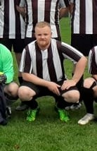

Ik ben Tom Leysen, 32 jaar en samen met mijn geweldige vrouw ouders van 2 kindjes. Al heel mijn leven ben ik een fervent sporter. Hieronder vallen voetbal, lopen, fietsen en fitness. Onder het motto ‘Mens sana in corpore sano’ blijf ik dit volhouden en is dit ook erg belangrijk voor mij. Ik heb ook ongeveer 20 jaar in de Chiro gezeten, waarvan 9 jaar leiding. Daardoor heb ik veel sociale en leidinggevende skills ontwikkeld. Motorrijden is ook een grote passie van mij. Zelf rijd ik op een “Suzuki Volusia VL800 ‘04”. Hiermee moeten jaarlijks natuurlijk de nodige kilometers gereden worden om hem in ere te houden.
